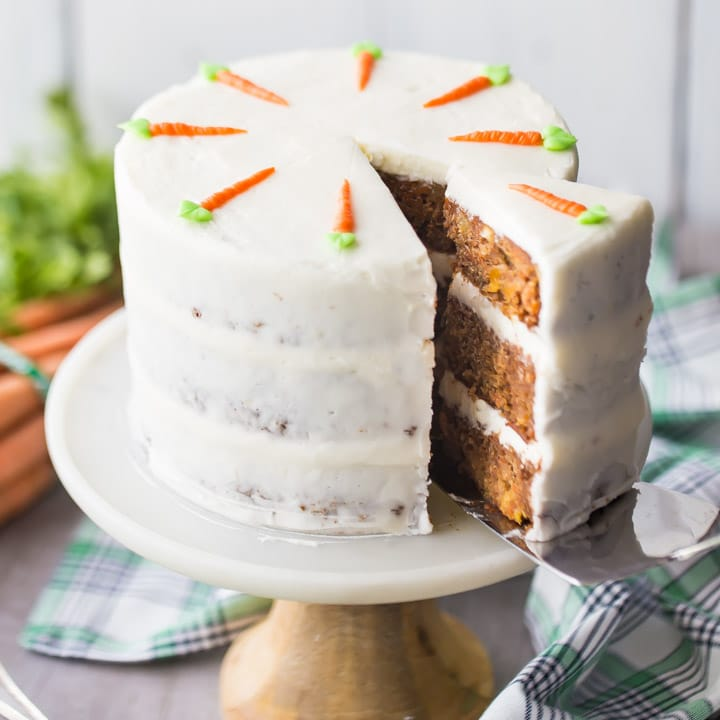

Fall Food Favorites!
Here we have plenty of places to eat on chilly fall days here in the beautiful city of Tacoma, as well as some delicious sweet treats that you can make with your fall produce or just to embrace the festivity of fall.
Delicious places to eat
Cook's Tavern
Cook's tavern is a family favorite, offering hearty meals and good service. Want to travel without leaving your town? Cook's tavern has rotating themes from places around the world, including cultural art, food, and a display in the front. This is a great restaurant to cozy up in with your family.
The Rosewood Cafe
Just down the street from Cook's Tavern, the Rosewood cafe is a Tacoma classic. Drop in here for lunch or a casual dinner. They have delicious sandwiches, daily soups and great, warm cookies for dessert. My family and I have gone here for as long as I can remember, and the warm and welcoming environment makes it a place to return to.
Pho Than Brothers
Down by the University of Washington, this statewide Pho chain is highly recommended. Go here for a delicious, warm meal. Maybe stop by the Tacoma Art Museum nearby for an entertaining afternoon with your family. The Children's Museum of Tacoma is nearby as well if you have young kids or younger siblings.
Fun Recipes for the Whole Family
Pumpkin Bread
My family's favorite fall recipe, this delicious pumpkin bread can be baked into muffins! Also, if you add orange butter, you can turn this delicious snack into a cozy Fall dessert.
Instructions:
First, gather the ingredients listed below:

- 1 teaspoon baking soda
- 1/2 cup hot water
- 3/4 cup vegetable oil
- 3 cups sugar
- 2 cups canned pumpkin
- 4 eggs
- 1 teaspoon ground cinnamon
- 1/2 teaspoon ground cloves
- 1 teaspoon salt
- 3 1/2 cups all purpose flour
- Preheat oven to 350 degrees.
- Dissolve the baking soda in the water.
- Mix oil, sugar and pumpkin and add this to the baking soda water.
- Add eggs, cinnamon, cloves, salt, and flour, and mix.
- If the batter is too orange, add more cinnamon and cloves. If it's too dry, add more pumpkin.
- Pour into two greased pans and bake for around an hour.
Carrot Cake
Another fun fall favorite, Carrot cake is a great dessert for more formal fall occasions.
Instructions:Gather these items:
-

- 2 cups all-purpose flour
- 2 teaspoons baking powder
- 1 teaspoon baking soda
- 1 1/2 teaspoons ground cinnamon
- 1/2 teaspoon ground ginger
- 1/4 teaspoon ground nutmeg
- 1/2 teaspoon salt
- 3/4 cup vegetable oil
- 4 large eggs
- 1 1/2 cups light brown sugar
- 1/2 cup granulated sugar
- 1/2 cup unsweetened applesauce
- 1 teaspoon vanilla extract
- 3 cups grated carrots
- Preheat the over to 350 degrees and grease two 9 inch pans.
- Whisk the flour, baking powder, baking soda, cinnamon, ginger, nutmeg, and salt.
- In another bowl, whisk oil, eggs, brown sugar, granulated sugar, applesauce, and vanilla extract. Then, add the carrots to this.
- Pour the mixed wet ingredients into the dry ingredients and mix until barely combined.
- Pour the batter into the pans and bake for 30-35 minutes.
- Let cool for around an hour and then top with cream cheese frosting and enjoy!
This recipe comes from the website Live Well Bake Often and was made by Danielle and was orginally titled: "The BEST Carrot Cake with Cream Cheese Frosting."